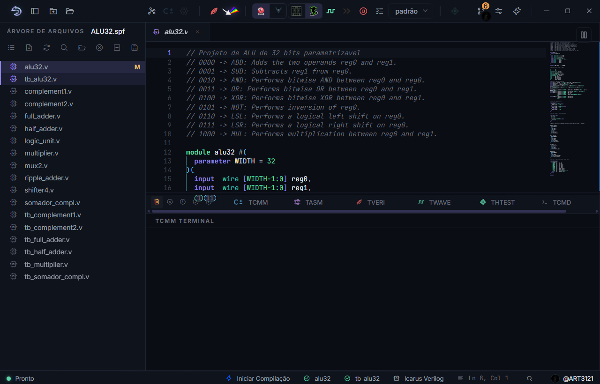
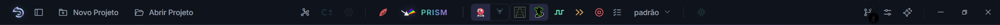
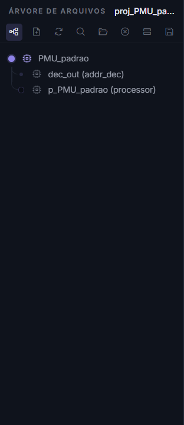
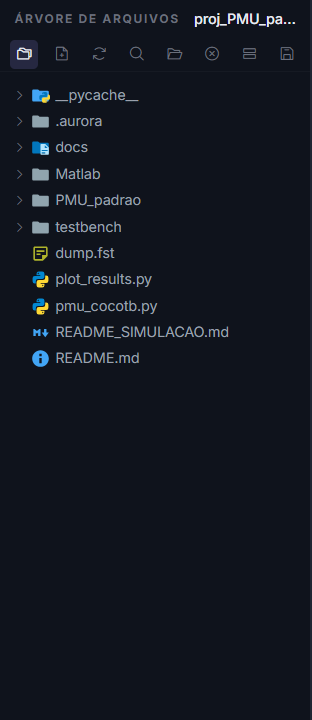
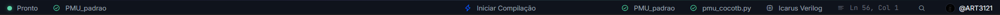

Tour pela interface¶
A janela da AURORA não tem a moldura padrão do Windows nem uma barra de menus tradicional. Toda a navegação vive em uma barra de título personalizada, no painel lateral da árvore de arquivos, no editor, nos terminais e na barra de status. Esta página apresenta cada região e o que esperar dela; o uso detalhado fica nas páginas dedicadas.
{kind=link}

Figura 1 As cinco regiões da janela principal: a barra superior, a árvore do projeto à esquerda, o editor ao centro, os terminais embaixo e a barra de status no rodapé.¶
Antes de percorrer cada uma, guarde o mapa geral:
Região |
Para que serve |
|---|---|
Barra superior |
Criar e abrir projetos, criar processadores, compilar, simular, abrir o PRISM, acionar a IA e as configurações |
Árvore lateral |
Abrir arquivos, alternar entre três visões do projeto e definir os papéis de top-level e testbench |
Editor |
Escrever C±, Verilog, SystemVerilog, Python e arquivos auxiliares |
Terminais |
Ler as mensagens de cada etapa da cadeia, uma aba por etapa |
Barra de status |
Conferir, antes de agir, qual processador está ativo e o que ainda falta |
O fluxo normal começa na árvore ou no editor, continua por um botão da barra superior e produz mensagens nos terminais. Antes de executar uma ação, confira a barra de status para não compilar ou simular o arquivo errado.
A barra superior¶
{kind=link}

Figura 2 A barra superior organiza-se em três zonas: identidade e projeto à esquerda, a cadeia do processador ao centro, apoios e controles de janela à direita.¶
À esquerda ficam o ícone do SAPHO, o botão que mostra ou esconde a barra lateral e os botões Novo Projeto e Abrir Projeto.
O centro concentra a cadeia do processador, disposta na ordem em que ela é usada. Vale ler a tabela abaixo uma vez com calma: ela responde à pergunta mais comum de quem está começando, que é por que um botão está apagado.
Botão |
O que faz |
Quando fica disponível |
|---|---|---|
Hub de Processadores |
Abre o formulário que cria um processador SAPHO |
Com um projeto aberto |
Compilar C± |
Roda a cadeia YANC e gera o Verilog, as memórias e o testbench |
Com um arquivo |
Configurações de simulação do processador |
Ajusta clock, número de ciclos e exibição de vetores nas ondas |
Com um processador ativo |
Sintetizar Verilog |
Verifica sintaxe e elaboração dos arquivos Verilog |
Com top-level definido |
Abrir PRISM |
Sintetiza com o Yosys e abre o diagrama RTL |
Com top-level definido |
Seletor de simulador |
Alterna entre Icarus Verilog e Verilator, para o aplicativo inteiro |
Sempre |
Seletor de visualizador |
Alterna entre GTKWave e Surfer |
Sempre |
Analisar Verilog (forma de onda) |
Roda a simulação e abre o visualizador com o resultado |
Com testbench definido |
Execução rápida |
Simula sem gravar ondas, para quando só interessam as saídas |
Com testbench |
Teste do processador sintetizado |
Exercita apenas as portas de entrada e saída, como caixa-preta |
Com um processador ativo e hardware já gerado |
Configuração de ondas |
Escolhe quais sinais a simulação vai gravar |
Com um projeto aberto |
Cancelar |
Interrompe todos os processos em andamento, sem fechar a IDE |
Durante uma compilação ou simulação |
À direita ficam os apoios: Controle de Versão, que abre o painel Dagr; Configurações do Aurora; Assistente IA, a estrela que abre a Aurora Intelligence; e os botões de minimizar, maximizar e fechar. Um duplo clique na área vazia da barra também maximiza ou restaura a janela.
Dica
Todo botão tem uma dica detalhada ao passar o mouse. Se as dicas atrapalharem depois que a interface ficar familiar, desligue-as em .
A árvore de arquivos¶
À esquerda fica o painel da árvore, com o nome do projeto aberto junto ao rótulo. O mesmo painel abriga três visões do mesmo projeto, alternadas por um único botão no cabeçalho.

Figura 3 Arquivos, a visão de trabalho: agrupada por processador, com os Verilog separados entre sintetizáveis e testbenches.¶
{kind=link}

Figura 4 Hierarquia, disponível após uma síntese: a árvore de instâncias de módulos como o Yosys a enxerga.¶
{kind=link}

Figura 5 Pastas, um explorador de diretórios completo, com menu de contexto para criar, renomear e excluir.¶
Um clique em um arquivo o abre no editor como aba de visualização; um clique duplo fixa a aba. Nas pastas, o clique expande ou recolhe.
O clique com o botão direito abre o menu de contexto, que é onde se atribuem os dois papéis mais importantes do projeto: Definir como Top Level, no módulo Verilog que integra o circuito, e Marcar como Testbench, no arquivo que estimula a simulação. Esses dois papéis são detalhados em Arquivos Verilog e Testbenches.
O cabeçalho da árvore reúne ainda os botões de novo arquivo, atualização, busca nos arquivos (Ctrl+Shift+F), abertura no explorador do sistema, backup do projeto em .zip, recolhimento da árvore e fechamento do projeto.
Nota
A árvore aceita a importação de arquivos .v, .sv, .vh e testbenches cocotb .py por arrastar e soltar. Outros tipos são recusados com uma dica; arquivos .gtkw, por exemplo, entram pelo seletor próprio da barra superior.
O editor¶
O centro da janela pertence ao editor, construído sobre o Monaco, o mesmo motor do Visual Studio Code. Abas múltiplas, divisão em até três painéis, realce de sintaxe para C±, assembly, Verilog e SystemVerilog, diagnósticos em tempo real e formatação automática vêm de fábrica. A página Editor, abas e painéis é dedicada a ele.
Os terminais¶
A área inferior reúne seis terminais em abas. Cinco são consoles de saída, cada etapa da cadeia escrevendo no seu, o que torna previsível onde procurar cada mensagem. O sexto é um shell PowerShell interativo de verdade.

Figura 6 Cada ação direciona a saída para o terminal correspondente, e a AURORA troca de aba sozinha conforme as etapas avançam.¶
Quem escreve onde: TCMM recebe o compilador C±; TASM recebe o montador, a geração do Verilog e os avisos de recurso instanciado; TVERI concentra o Icarus Verilog e o Yosys; TWAVE acompanha a simulação e a abertura dos visualizadores; THTEST é dedicado ao teste do processador sintetizado; e TCMD é o shell integrado. Detalhes em Os terminais.
A barra de status¶
{kind=link}

Figura 7 A barra de status resume, em uma linha, tudo o que a próxima compilação ou simulação vai usar.¶
Da esquerda para a direita: o indicador Pronto ou Não Pronto, cujo ponto verde ou vermelho resume se o projeto está em condições de compilar; o nome do processador ativo, deduzido do arquivo .cmm em foco no editor; ao centro, o botão Iniciar Compilação; e à direita os avisos de estrutura, o motor de simulação selecionado, a posição do cursor e o indicador do GitHub.
Importante
Consulte a barra de status antes de compilar, simular ou abrir o PRISM. A maior parte dos “não funcionou” de quem está começando é, na verdade, o arquivo errado em foco no editor.
Paleta de comandos e notificações¶
A paleta de comandos, aberta com Ctrl+Shift+P, oferece busca difusa sobre os comandos da IDE, organizados em grupos. É o caminho mais curto quando se sabe o nome da ação, mas não onde fica o botão.
Eventos como a criação de arquivos ou a troca de simulador aparecem como notificações discretas no canto da janela.
Quando um botão estiver desabilitado¶
Verifique nesta ordem, que é a ordem das dependências:
há um projeto aberto;
o arquivo certo está aberto e em foco no editor;
o processador ativo, na barra de status, é o que você quer compilar;
o top-level foi definido, se a ação exige síntese;
o testbench foi definido, se a ação exige simulação;
nenhuma execução anterior continua em andamento.
Na quase totalidade dos casos, um botão apagado significa que falta uma dessas seleções. Salve o arquivo ativo e aguarde a conclusão de qualquer operação anterior antes de tentar de novo.
O próximo passo¶
Agora que a janela não é mais estranha, construa algo nela: Primeiro projeto: um filtro de média móvel.